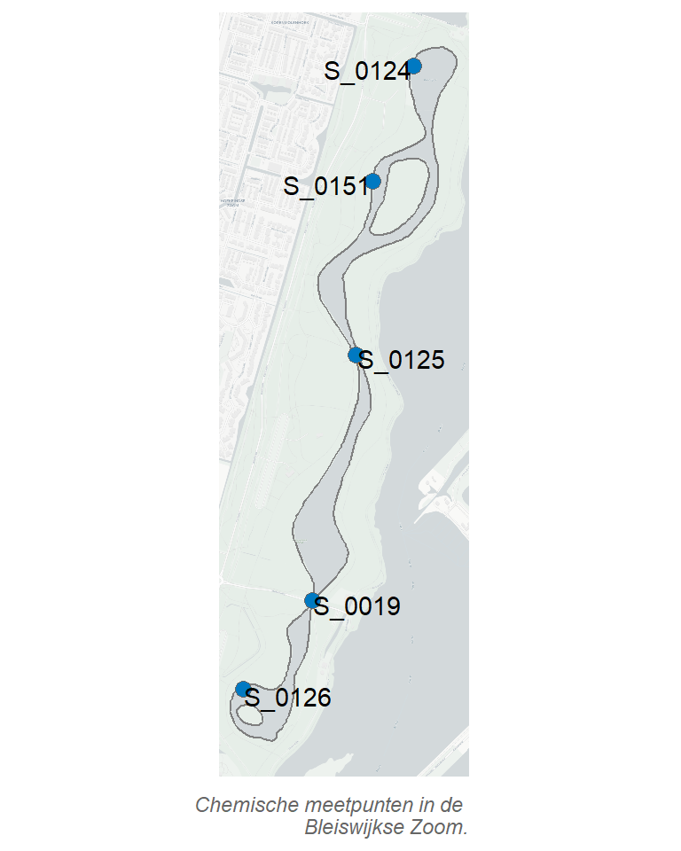

A Monitoringslocaties
 In de Bleiswijkse Zoom wordt elk jaar de chemie en biologie gemonitord.
De chemie wordt maandelijks bemonsterd op de meetpunten S_0124, S_0125, en S_0126. In verband met de werkzaamheden met Phoslock is daarnaast ook op de meetpunten S_0019 en S_0151 gemeten. Tijdens het zwemseizoen (1 mei tot 1 oktober) wordt op meetpunt S_0124 de zwemwaterkwaliteit gemeten.
Biologie wordt verspreid over de plas gemeten, omdat dit een grotere ruimtelijke spreiding kent. De hoeveelheid waterplanten wordt bijvoorbeeld op 30 punten gemeten. Voor de visbemonsteringen worden plekken langs de oever en midden op het water geselecteerd.